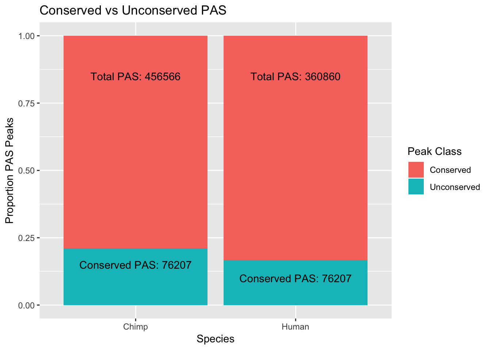

Last updated: 2018-08-28
workflowr checks: (Click a bullet for more information) ✔ R Markdown file: up-to-date
Great! Since the R Markdown file has been committed to the Git repository, you know the exact version of the code that produced these results.
✔ Environment: empty
Great job! The global environment was empty. Objects defined in the global environment can affect the analysis in your R Markdown file in unknown ways. For reproduciblity it’s best to always run the code in an empty environment.
✔ Seed:
set.seed(20180801)
The command set.seed(20180801) was run prior to running the code in the R Markdown file. Setting a seed ensures that any results that rely on randomness, e.g. subsampling or permutations, are reproducible.
✔ Session information: recorded
Great job! Recording the operating system, R version, and package versions is critical for reproducibility.
✔ Repository version: f670cfa
wflow_publish or wflow_git_commit). workflowr only checks the R Markdown file, but you know if there are other scripts or data files that it depends on. Below is the status of the Git repository when the results were generated:
Ignored files:
Ignored: .RData
Ignored: .Rhistory
Ignored: .Rproj.user/
Untracked files:
Untracked: com_threeprime.Rproj
Untracked: data/PeakPerExon/
Untracked: data/PeakPerGene/
Untracked: data/comp.pheno.data.csv
Untracked: data/dist_TES/
Untracked: data/dist_upexon/
Untracked: data/liftover/
Untracked: data/map.stats.csv
Untracked: data/map.stats.xlsx
Untracked: data/orthoPeak_quant/
Unstaged changes:
Deleted: comparitive_threeprime.Rproj
| File | Version | Author | Date | Message |
|---|---|---|---|---|
| Rmd | f670cfa | brimittleman | 2018-08-28 | add plot for num conserved peaks |
| html | bb880d8 | brimittleman | 2018-08-24 | Build site. |
| Rmd | c39776d | brimittleman | 2018-08-24 | add corresponding peak names |
| html | d0d4599 | brimittleman | 2018-08-21 | Build site. |
| Rmd | 843d7d1 | brimittleman | 2018-08-21 | update based on knitr profile |
| html | 7bdbd48 | brimittleman | 2018-08-17 | Build site. |
| Rmd | 392aed9 | brimittleman | 2018-08-17 | lift code and add to index |
I will use this analysis to create a pipeline I can use to liftover the peaks once I get them from the human and chimp three prime seq data.
Tool to add to conda environment:
Chain file from UCSC:
/project2/gilad/briana/genome_anotation_data/comp_genomes/liftover/hg38ToPanTro5.over.chain.gz
/project2/gilad/briana/genome_anotation_data/comp_genomes/liftover/panTro5ToHg38.over.chain.gz
I want the bed files with the peaks to be in the folowing format:
chr# start end species_peakname
Resulting bed files will go in: /project2/gilad/briana/comparitive_threeprime/data/liftover
To go from the peak bed file created in the callPeaksbySpecies analysis I need to cut the file to the first four columns and add the species name to the peak.
awk '{print $1 "\t" $2 "\t" $3 "\t" "human_"$4}' /project2/gilad/briana/comparitive_threeprime/human/data/mergedPeaks_comb/filtered_APApeaks_merged_allchrom_named_human.bed > /project2/gilad/briana/comparitive_threeprime/data/liftover/filtered_humanPeaks.bedawk '{print $1 "\t" $2 "\t" $3 "\t" "chimp_"$4}' /project2/gilad/briana/comparitive_threeprime/chimp/data/mergedPeaks_comb/filtered_APApeaks_merged_allchrom_named_chimp.bed > /project2/gilad/briana/comparitive_threeprime/data/liftover/filtered_chimpPeaks.bedRun liftOver with ‘liftOver input.bed hg18ToHg19.over.chain.gz output.bed unlifted.bed’ I want to run it both direction. I will then lift back.
LiftForward.sh
#!/bin/bash
#SBATCH --job-name=LiftForward
#SBATCH --account=pi-yangili1
#SBATCH --time=24:00:00
#SBATCH --output=LiftForward.out
#SBATCH --error=LiftForward.err
#SBATCH --partition=broadwl
#SBATCH --mem=16G
#SBATCH --mail-type=END
module load Anaconda3
source activate comp_threeprime_env
#human to chimp
liftOver /project2/gilad/briana/comparitive_threeprime/data/liftover/filtered_humanPeaks.bed /project2/gilad/briana/genome_anotation_data/comp_genomes/liftover/hg38ToPanTro5.over.chain.gz /project2/gilad/briana/comparitive_threeprime/data/liftover/filtered_humanPeakslifted.bed /project2/gilad/briana/comparitive_threeprime/data/liftover/filtered_humanPeaksunlifted.bed
#chimp to human
liftOver /project2/gilad/briana/comparitive_threeprime/data/liftover/filtered_chimpPeaks.bed /project2/gilad/briana/genome_anotation_data/comp_genomes/liftover/panTro5ToHg38.over.chain.gz /project2/gilad/briana/comparitive_threeprime/data/liftover/filtered_chimpPeaks.lifted.bed /project2/gilad/briana/comparitive_threeprime/data/liftover/filtered_chimpPeaks.unlifted.bedLiftReverse.sh
Now the lifted human peaks are on chimp cordinates and vise-versa. I will lift back over.
#!/bin/bash
#SBATCH --job-name=LiftReverse
#SBATCH --time=24:00:00
#SBATCH --output=LiftReverse.out
#SBATCH --error=LiftReverse.err
#SBATCH --partition=broadwl
#SBATCH --mem=16G
#SBATCH --mail-type=END
module load Anaconda3
source activate comp_threeprime_env
#human to chimp back to human
liftOver /project2/gilad/briana/comparitive_threeprime/data/liftover/filtered_humanPeakslifted.bed /project2/gilad/briana/genome_anotation_data/comp_genomes/liftover/panTro5ToHg38.over.chain.gz /project2/gilad/briana/comparitive_threeprime/data/liftover/filtered_humanPeakslifted_reverse.bed /project2/gilad/briana/comparitive_threeprime/data/liftover/filtered_humanPeaksunlifted.reverse.bed
#chimp to human back to chimp
liftOver /project2/gilad/briana/comparitive_threeprime/data/liftover/filtered_chimpPeaks.lifted.bed /project2/gilad/briana/genome_anotation_data/comp_genomes/liftover/hg38ToPanTro5.over.chain.gz /project2/gilad/briana/comparitive_threeprime/data/liftover/filtered_chimpPeaks.lifted.reverse.bed /project2/gilad/briana/comparitive_threeprime/data/liftover/filtered_chimpPeaks.unlifted.reverse.bed
LiftFinal.sh
I now have lifted back and I want to go forward one more time to get the final list i should use.
#!/bin/bash
#SBATCH --job-name=LiftFinal
#SBATCH --time=24:00:00
#SBATCH --output=LiftFinal.out
#SBATCH --error=LiftFinal.err
#SBATCH --partition=broadwl
#SBATCH --mem=16G
#SBATCH --mail-type=END
module load Anaconda3
source activate comp_threeprime_env
#human to chimp back to human - final lift to chimp
liftOver /project2/gilad/briana/comparitive_threeprime/data/liftover/filtered_humanPeakslifted_reverse.bed /project2/gilad/briana/genome_anotation_data/comp_genomes/liftover/hg38ToPanTro5.over.chain.gz /project2/gilad/briana/comparitive_threeprime/data/liftover/filtered_humanPeakslifted_reverse.finalCcords.bed /project2/gilad/briana/comparitive_threeprime/data/liftover/filtered_humanPeaksunlifted.reverse.final.bed
#chimp to human back to chimp- final lift to human
liftOver /project2/gilad/briana/comparitive_threeprime/data/liftover/filtered_chimpPeaks.lifted.reverse.bed /project2/gilad/briana/genome_anotation_data/comp_genomes/liftover/panTro5ToHg38.over.chain.gz /project2/gilad/briana/comparitive_threeprime/data/liftover/filtered_chimpPeaks.lifted.reverse.finalHcords.bed /project2/gilad/briana/comparitive_threeprime/data/liftover/filtered_chimpPeaks.unlifted.reverse.final.bed
-change min percentage
The final lifted files have 350111 peaks that lifted from chimp to human and 442100 peaks that lifter human to chimp. I next will find the intersection of these files for the final list. In order to do this I need to create files that have the coordinates in human and in chimp. I can do this using the reverse file and final file.
library(dplyr)
Attaching package: 'dplyr'The following objects are masked from 'package:stats':
filter, lagThe following objects are masked from 'package:base':
intersect, setdiff, setequal, unionlibrary(workflowr)This is workflowr version 1.1.1
Run ?workflowr for help getting startedlibrary(tidyverse)── Attaching packages ─────────────────────────────────────────────────── tidyverse 1.2.1 ──✔ ggplot2 3.0.0 ✔ readr 1.1.1
✔ tibble 1.4.2 ✔ purrr 0.2.5
✔ tidyr 0.8.1 ✔ stringr 1.3.1
✔ ggplot2 3.0.0 ✔ forcats 0.3.0── Conflicts ────────────────────────────────────────────────────── tidyverse_conflicts() ──
✖ dplyr::filter() masks stats::filter()
✖ dplyr::lag() masks stats::lag()library(reshape2)
Attaching package: 'reshape2'The following object is masked from 'package:tidyr':
smiths#human rev is in human coordinates
human_rev= read.table("../data/liftover/filtered_humanPeakslifted_reverse.bed", col.names = c("human_chr", "human_start", "human_end", "name"), stringsAsFactors = F)
#final coords are in chimp coordinates
human_lifted=read.table("../data/liftover/filtered_humanPeakslifted_reverse.finalCcords.bed", col.names = c("chimp_chr", "chimp_start", "chimp_end", "name"), stringsAsFactors = F)I want to join these files by the name of the peaks keeping only the peaks that are in the final lifted.
human_final=human_lifted %>% left_join(human_rev, by="name")#chimp rev in chimp cords
chimp_rev=read.table("../data/liftover/filtered_chimpPeaks.lifted.reverse.bed", col.names = c("chimp_chr", "chimp_start", "chimp_end", "name"), stringsAsFactors = F)
#final chimp lift is in human coords
chimp_lifted=read.table("../data/liftover/filtered_chimpPeaks.lifted.reverse.finalHcords.bed", col.names=c( "human_chr", "human_start", "human_end", "name"),stringsAsFactors = F )Join the files
chimp_final=chimp_lifted %>% left_join(chimp_rev, by="name")union_peaks=human_final %>% inner_join(chimp_final, by=c("human_chr", "human_start", "human_end", "chimp_chr", "chimp_start", "chimp_end" ))
peak_names=union_peaks %>% select(name.x, name.y)
colnames(peak_names)= c("human", "chimp")This leaves 76207
I can then seperate these and write out the bedfile. With that I can look at metrics such as how many per gene or distance to last exon.
human_ortho= union_peaks %>% select(human_chr, human_start, human_end, name.x)
chimp_ortho= union_peaks %>% select(chimp_chr, chimp_start, chimp_end, name.y)Write these:
write.table(human_ortho, file="../data/liftover/humanOrthoPeaks.bed", quote = F, row.names = F, col.names = F,sep="\t")
write.table(chimp_ortho, file="../data/liftover/chimpOrthoPeaks.bed", quote= F, row.names = F, col.names = F, sep="\t")
write.table(peak_names, file="../data/liftover/HumanChimpPeaknames.txt", quote=F, row.names = F, col.names = T, sep="\t")I want to plot the number of peaks by proportion that are conserved similar to figure 1a in wang et al. 2018.
hTotal=456566
cTotal= 360860
hConprop= hTotal- 76207
cConprop=cTotal- 76207
hUnConprop=hTotal - hConprop
cUnConprop=cTotal- cConprop
hum=c(hConprop,hUnConprop)
chi=c(cConprop, cUnConprop)
both=as.data.frame(rbind(hum, chi))
colnames(both)=c("Conserved", "Unconserved")
both=both %>% mutate( Species=c("Human", "Chimp"))
both_melt=melt(both, id.vars="Species")
pas_plot=ggplot(both_melt, aes(x=Species, fill=variable, y=value)) + geom_bar(stat="identity", position = "fill") + labs(y="Proportion PAS Peaks", title="Conserved vs Unconserved PAS") + scale_fill_discrete(name="Peak Class") + annotate("text", x=1, y=.85, label=paste("Total PAS:", hTotal, sep=" "))+ annotate("text", x=2, y=.85, label=paste("Total PAS:", cTotal, sep=" ")) + annotate("text", x=1, y=.15, label=paste("Conserved PAS:", "76207", sep=" ")) + annotate("text", x=2, y=.1, label=paste("Conserved PAS:", "76207", sep=" "))
pas_plot
sessionInfo()R version 3.5.1 (2018-07-02)
Platform: x86_64-apple-darwin15.6.0 (64-bit)
Running under: macOS Sierra 10.12.6
Matrix products: default
BLAS: /Library/Frameworks/R.framework/Versions/3.5/Resources/lib/libRblas.0.dylib
LAPACK: /Library/Frameworks/R.framework/Versions/3.5/Resources/lib/libRlapack.dylib
locale:
[1] en_US.UTF-8/en_US.UTF-8/en_US.UTF-8/C/en_US.UTF-8/en_US.UTF-8
attached base packages:
[1] stats graphics grDevices utils datasets methods base
other attached packages:
[1] bindrcpp_0.2.2 reshape2_1.4.3 forcats_0.3.0 stringr_1.3.1
[5] purrr_0.2.5 readr_1.1.1 tidyr_0.8.1 tibble_1.4.2
[9] ggplot2_3.0.0 tidyverse_1.2.1 workflowr_1.1.1 dplyr_0.7.6
loaded via a namespace (and not attached):
[1] tidyselect_0.2.4 haven_1.1.2 lattice_0.20-35
[4] colorspace_1.3-2 htmltools_0.3.6 yaml_2.2.0
[7] rlang_0.2.2 R.oo_1.22.0 pillar_1.3.0
[10] glue_1.3.0 withr_2.1.2 R.utils_2.7.0
[13] modelr_0.1.2 readxl_1.1.0 bindr_0.1.1
[16] plyr_1.8.4 munsell_0.5.0 gtable_0.2.0
[19] cellranger_1.1.0 rvest_0.3.2 R.methodsS3_1.7.1
[22] evaluate_0.11 labeling_0.3 knitr_1.20
[25] broom_0.5.0 Rcpp_0.12.18 scales_1.0.0
[28] backports_1.1.2 jsonlite_1.5 hms_0.4.2
[31] digest_0.6.16 stringi_1.2.4 grid_3.5.1
[34] rprojroot_1.3-2 cli_1.0.0 tools_3.5.1
[37] magrittr_1.5 lazyeval_0.2.1 crayon_1.3.4
[40] whisker_0.3-2 pkgconfig_2.0.2 xml2_1.2.0
[43] lubridate_1.7.4 assertthat_0.2.0 rmarkdown_1.10
[46] httr_1.3.1 rstudioapi_0.7 R6_2.2.2
[49] nlme_3.1-137 git2r_0.23.0 compiler_3.5.1 This reproducible R Markdown analysis was created with workflowr 1.1.1